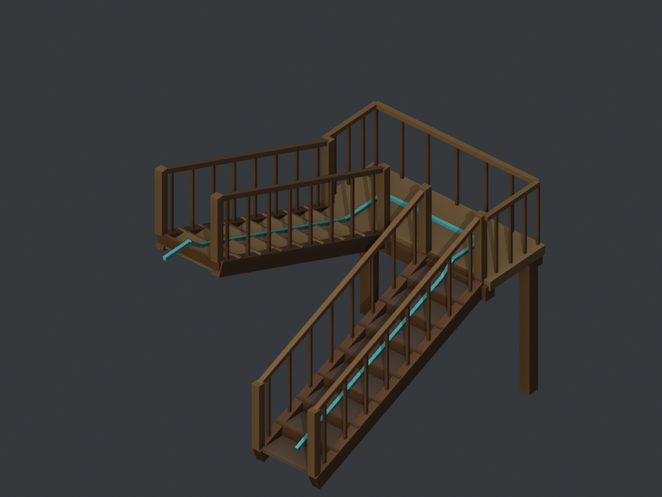

Newer revision: one shared central railing (r37)
Built in Blender before the new paint pass. Eight steps descend on the left to a turning landing, then eight more descend back on the right beneath the entrance floor. The distorted clock is replaced by an ordinary panelled entrance door.

The flight width is 0.95 m; each drop is 1.2 m. The turquoise line in the construction views follows the continuous walking route. It is not part of the artwork. The upper floor naturally occludes most of the lower flight from the game camera.
Editable Blender model · Pixelorama room · Construction and paint notes · Geometry checks · Export verification · Street options